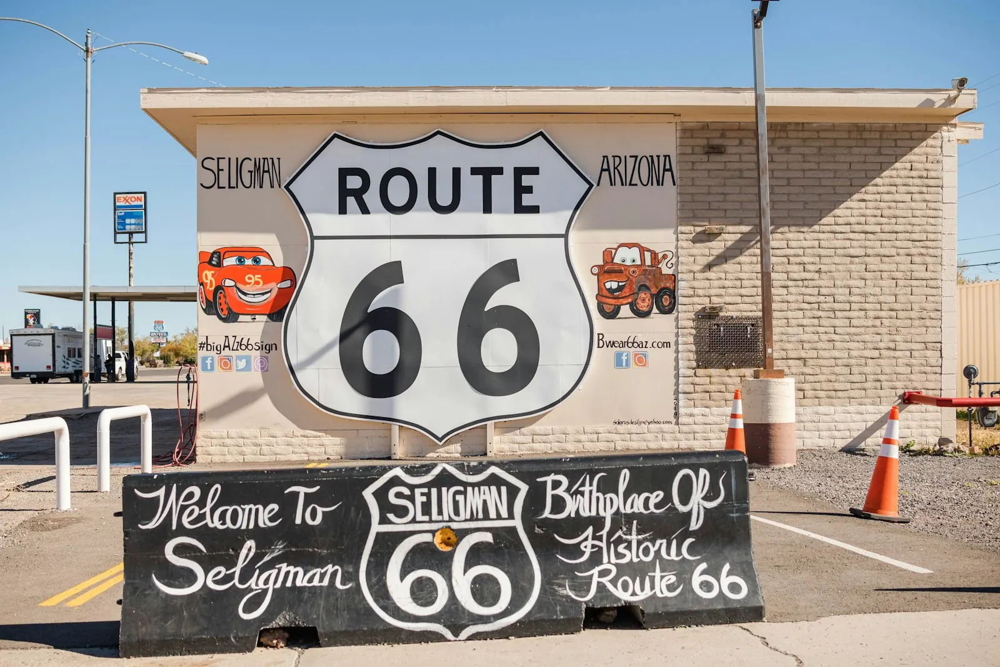

Route 66 in California: The Golden State's Historic Passport Stops
· By GoldenPath Guide Editorial Team
Opened in 1926, Route 66 spent a century hauling millions of dreamers toward the promise of California. For the road’s centennial, the Golden State’s western stretch of the Mother Road makes a perfect drive — a ribbon of neon, desert and coastline that still hums with the hope of everyone who ever followed it west.
The California segment runs from the Pacific to the edge of the Mojave, and it rewards drivers who stop to read the signs.
Santa Monica: The End of the Road
Start where the journey finished. The Route 66 End of the Trail sign on Santa Monica Pier marks the western terminus, with 3.5 miles of broad beach and a breezy boardwalk to wander. Route 66 navigation apps let you trace most of the old alignment, and the 22-mile Marvin Braude Bike Trail hugging the shoreline is a detour well worth the miles. On a warm afternoon, stroll Third Street Promenade past galleries and shops before catching the vintage neon glow at dusk.
Hollywood, Grand Central & Pasadena
Rolling inland, the route sweeps past the sparkle of Hollywood, the bustling Grand Central Market, and the leafy, old-money streets of Pasadena. Los Angeles unfolds as a city where screen, music and food collide, and the hidden eateries and galleries reward a lingering pass.
San Bernardino & Barstow: Desert Memories
In San Bernardino, small museums recall the westward migrants, while Barstow serves up a slice of Americana at the quirky Elmer Long’s Bottle Tree Ranch — a forest of colorful glass bottles strung on old fence posts, planted beside the outlet mall. Neon signs and retro storefronts trade in 20th-century nostalgia, their stories still legible in the dust.
The Mojave: A Landscape of Dunes & Joshua Trees
Into the Mojave National Preserve, a sweep of more than 800,000 acres, the dazzling sands of Kelso Dunes sing in the wind and stands of Joshua trees punctuate the range. In spring, desert wildflowers briefly flood the sand with color, and as the sun drops the Mojave goes quiet in a way that dissolves the road fatigue.
A century on, this road still carries the westward dream — and each stop along the way tells a different chapter of it.
Driving the Alignment: Miles, Gas and Navigation
The California stretch of Route 66 runs about 315 miles from Santa Monica Pier to the Arizona line at Needles. The honest driving time is two full days with stops; one-day blitzes miss the point and the museums. Modern navigation needs help: I-40 bypassed long desert sections, so a dedicated Route 66 app or the EZ Guide keeps drivers on the 1926–1960s alignments through Barstow, Newberry Springs and Amboy. Gas strategy matters — fill in Barstow or Needles, since the 100-mile desert gap between them holds exactly one famous station at Amboy (premium-priced when open) and long dead-cell stretches. Carry two liters of water per person; summer shade temperatures pass 110 degrees between June and September. Winter drivers get mild 60s days and empty roads. Cell coverage drops for 20-to-30-mile stretches across the Mojave — download offline maps before leaving Barstow.
Roadside Stops Worth the Detour
Elmer Long's Bottle Tree Ranch outside Barstow opens daylight hours free (donations welcome) — allow 30 minutes among the glass forests. Barstow's Route 66 Mother Road Museum, inside the Harvey House depot, charges no admission and holds an hour of migration-era artifacts. Amboy's Roy's Motel and Cafe sign, restored to neon glory, photographs best at dusk; the cafe pours sodas and pie when staffed. The Mojave National Preserve's Kelso Depot visitor center (free, 9 a.m. to 5 p.m.) anchors the desert leg with railroad exhibits and clean restrooms — the last reliable facilities for 50 miles. The 7,000-foot Kelso Dunes sing (booming sand) on dry afternoons after a 3-mile round-trip climb. Calico Ghost Town near Barstow charges about $10 for adults with mine tours extra. Skip the Shamrock-style photo-trap gift shops with $30 T-shirts — the museum stores sell better souvenirs cheaper.
Where to Sleep: Motels and Desert Nights
Period motels are the lodging story. The Wigwam Motel in San Bernardino (concrete teepee rooms) runs $100 to $160 a night and books out weekends months ahead — reserve 8 to 12 weeks out for spring and fall. Barstow's Route 66 motels run $70 to $110 with neon signs and parking at the door; read recent reviews, since quality varies widely. Santa Monica beach hotels ($250 to $450) and Pasadena's old-town inns ($180 to $280) frame the city ends. Desert nights reward stargazers: the Mojave Preserve's Hole-in-the-Wall campground charges $12 a night with pit toilets and some of the darkest skies in the state — new-moon weekends are the prize. Summer desert sleepers need air conditioning; winter campers need 20-degree bags, since nights drop to freezing. Dinners along the route run $12 to $20 at the classic diners; Barstow's outlet-adjacent chains cover picky eaters.
Route 66 Centennial Events in 2026
The 2026 centennial adds pop-up exhibits, classic-car cruises and neon-lighting ceremonies in Barstow, Pasadena and Santa Monica through the year. The Mother Road Museum extends weekend hours during event months, and Santa Monica's pier hosts birthday programming around the November 11, 1926 designation date. Check city tourism calendars a month out, since event dates shift.
All Destinations
The Ultimate California Road Trip
Santa Monica: Beach, Pier & Palisades